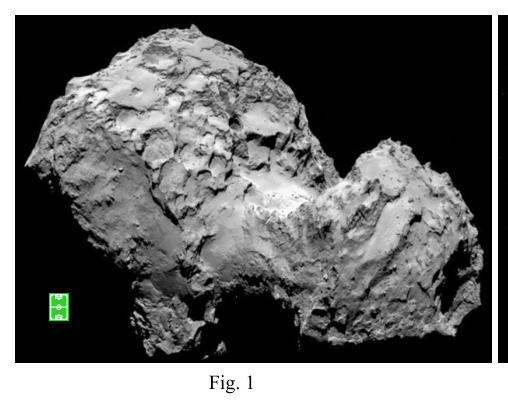
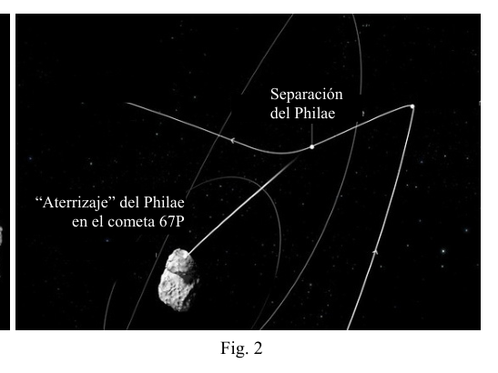

P1. La larga excursión a un cometa. El 2 de marzo de 2004, desde la base de Kourou en la Guayana francesa, se lanzó al espacio la sonda espacial Rosetta. Así empezó la extraordinaria misión de la Agencia Espacial Europea, uno de cuyos objetivos era depositar el módulo Philae, que la sonda llevaba a bordo, sobre la superficie del cometa 67P, descubierto en 1969 por los astrónomos Klim Churyumov y Svetlana Gerasimenko. En su largo viaje, el Rosetta aprovechó los impulsos gravitatorios propiciados por la Tierra (2005), por Marte (2007), por la Tierra de nuevo (2007), por el asteroide Steins (2008), otra vez por la Tierra (2009), y finalmente, por el asteroide Lutetia. En junio de 2011 el Rosetta entró en el espacio profundo, la parte más aburrida del viaje, y se echó una siestecita hasta que lo despertaron el 20 de enero de 2014, ya que en agosto tenía que comenzar las complicadas maniobras de aproximación al cometa 67P. De mayo a agosto de 2014, estando ya muy próximo al lejano y pequeño cometa, Rosetta tuvo que trabajar duro adquiriendo datos del cometa y haciendo reconocimientos detallados de su superficie para elegir el “campo de aterrizaje” de su módulo Philae. En la figura 1 se muestra una fotografía del cometa hecha desde la sonda, y se compara con un campo de futbol1. Por fin, tras varios cambios de órbita alrededor del cometa, y siguiendo una trayectoria de colisión, a las 08:35 GMT del 12 de noviembre Rosseta dejó “caer” al Philae, como se esquematiza en la figura 2, desde una altura km 5 , 22
H y con una velocidad inicial cm/s 0 , 18
iv respecto al cometa. Casi siete horas después Philae alcanzó la superficie de 67P. Tras el desprendimiento del módulo, Rosetta cambió su trayectoria y pasó a una órbita elíptica alrededor del Sol, acompañando al cometa. Se espera que en agosto de 2015 se alcance el perihelio de la órbita, y en diciembre se considerará terminada la misión. A las enormes dificultades técnicas de este tipo de misiones hay que añadir una más, el considerable tiempo que transcurre desde que una señal de radio se emite en la Tierra hasta que es recibida por la sonda, o viceversa. a) Calcula el tiempo, t , que tardaba en llegar una señal desde la Tierra al Rosetta cuando estaba en las proximidades del cometa, a una distancia ua 3,41
D . ( m) 10 50 ,1 ua 1 11
.
1 El “campo de futbol” es una unidad cada vez más empleada en los medios de comunicación. Se usa indistintamente como unidad de longitud, de superficie e incluso ¡de volumen! A este paso, pronto sustituirá al viejo “metro” y sus derivados. Sin embargo, nihil novum sub sole, el Stadio ( ) era una unidad de longitud de la antigua Grecia. Equivalía a la longitud del estadio de Olimpia.
Fig. 1 “Aterrizaje” del Philae en el cometa 67P Separación del Philae Fig. 2 OLIMPIADA ESPAÑOLA DE FÍSICA FASE DE ARAGÓN olimpiada_de_fisica.unizar.es Como se aprecia en la figura 1, el cometa 67P no se parece mucho a una esfera, pero en Física los “modelos” tienen una importancia capital para obtener resultados aproximados, y para elaborar estos modelos la imaginación juega un papel destacado. En nuestro caso, vamos a considerar que, en primera aproximación, el cometa es esférico, de masa kg 10 0 ,1 13
c M y densidad 3 kg/m 470
c
(datos obtenidos por el propio Rosseta). b) Con este modelo esférico, ¿cuál es el radio del cometa, c R ?
Además de los anteriores, en adelante puedes emplear también los siguientes datos:
Masa de la Tierra: kg 10 5,97 24
T M
Radio de la Tierra: m 10 6,37 6
T R
Aceleración de la gravedad en la superficie de la Tierra: 2 m/s 9,81
T g . c) Determina la expresión analítica de la velocidad del Philae al alcanzar la superficie del cometa, f v , y calcula su valor. d) Determina y calcula la relación entre aceleración de la gravedad en la superficie de la Tierra y la correspondiente en la superficie del cometa, c T g g / . e) Determina y calcula la velocidad de escape, e v , de un cuerpo lanzado desde la superficie del cometa 67P.
El “aterrizaje” del Philae resultó ser más complicado de lo esperado. Fallaron los arpones que tenían que inmovilizarlo nada más tocar la superficie del planeta y el Philae rebotó dos veces hasta quedar en reposo en un lugar inapropiado y sombrío. De hecho, la escasa radiación solar que le llegaba hizo que sus baterías no pudiesen recargarse según lo previsto y se agotasen pronto. Aunque tuvo tiempo para transmitir información muy valiosa del cometa2, se “durmió” de nuevo y quedó a la espera de volver a despertar cuando el 67P se aproxime al Sol. ¡Suerte, Philae!
2 Esta misión ha sido declarada por la prestigiosa revista Science como el más importante descubrimiento científico del año 2014. OLIMPIADA ESPAÑOLA DE FÍSICA FASE DE ARAGÓN olimpiada_de_fisica.unizar.es P1 Solución a) Las señales que se envían a la sonda son ondas electromagnéticas que se propagan a la velocidad de la luz, km/s 10 0 ,3 8
c . Por tanto, el tiempo que tarda en llegar una señal desde la Tierra a un lugar separado una distancia m 10 5,12 ua 3,41 11
D , es
c D t
in m 4 , 28 s 10 71 ,1 3
t
b) El volumen del cometa, supuesto esférico, es
3 3 4 c c c R M V
3 /1 4 3
c c c M R
km 7 ,1
c R
(1) c) El módulo Philae se desprende del Rosetta desde una altura H y con una velocidad inicial iv , ambas conocidas, y cae hacia el cometa bajo la acción de su campo gravitatorio. Llamando m a la masa del módulo, la conservación de su energía mecánica implica
c c f c c i R mM G v m R H mM G v m
2 2 2 1 2 1
De donde
H R R GM v v c c c i f 1 1 2 2 2
Expresando G en función de gT, la aceleración de la gravedad en la Tierra, T T T M R g G / 2
, resulta
2 /1 2 2 1 1 2
H R R M M R g v v c c T c T T i f
m/s 87 , 0
f v
d) Las expresiones de la aceleración de la gravedad en las superficies del cometa y de la Tierra son, respectivamente
2c c c R M G g
y 2 T T T R M G g
La relación entre ellas es
2 2 T c c T c T R R M M g g
4 10 3 , 4
c T g g
e) La velocidad de escape es la que habría que imprimir a un cuerpo para que, lanzado desde la superficie del cometa, alcanzase una distancia infinita con velocidad cero, es decir con energía mecánica nula. Como esta energía debe conservarse, también debe ser nula en el instante inicial, o sea
0 2 1 2
c c e R mM G v m
c c e R M G v 2 2
2 /1 2 2
c T T c T e R R M M g v , m/s 88 , 0
e v OLIMPIADA ESPAÑOLA DE FÍSICA FASE DE ARAGÓN olimpiada_de_fisica.unizar.es

Fotografia del cometa 67P da lontano
Separazione del Philae dal cometaTopic: Gravitation, Newtonian Mechanics, Astrophysics Metodi: Newton’s Law of Gravitation, Conservation of Energy, Kinematic Equations Competenze: Physical Reasoning, Mathematical Modeling, Unit Conversion Objects: Satellite, Planet Fonte: Testo (PDF) — p.2
P1. L’escursione lunga verso una cometa. Il 2 marzo 2004, dalla base di Kourou in Guayana francese, la sonda è stata lanciata nello spazio Rosetta spaziale. Così è iniziata la straordinaria missione dell’Agenzia Spaziale Europea, uno dei cui obiettivi è Il primo piano era quello di depositare il modulo Philae, che la sonda portava a bordo, sulla superficie della cometa 67P, scoperta nel 1969 dagli astronomi Klim Churyumov e Svetlana Gerasimenko. Nel suo lungo viaggio, la Rosetta ha sfruttato gli impulsi gravitazionali favoriti dalla Terra (2005), per Marte (2007), per la Terra di nuovo (2007), per l’asteroide Steins (2008), di nuovo per la Terra (2009), e Finalmente, per l’asteroide Lutetia. Nel giugno 2011 la Rosetta è entrata nello spazio profondo, la parte più annoiato dal viaggio, e si mise a fare un po’ di siesta fino a quando lo svegliarono il 20 gennaio 2014, dato che nell’agosto doveva iniziare le complicate manovre di avvicinamento alla cometa 67P. Dal maggio all’agosto 2014, Essendo già molto vicino alla lontana e piccola cometa, Rosetta ha dovuto lavorare duramente per acquisire dati del La sua superficie è stata analizzata in dettaglio per scegliere il campo di atterraggio. modulo Philae. La figura 1 mostra una fotografia della cometa fatta dalla sonda, e la confronta con un Campo di calcio1. Infine, dopo vari cambiamenti di orbita intorno alla cometa, e seguendo un percorso di collisione, le 08:35 GMT del 12 novembre Rosseta ha lasciato il Philae, come schematizzato nella figura 2, da una altezza km 5 , 22
H e con una velocità iniziale cm/s 0 , 18
iv
- per quanto riguarda il cometa. Quasi sette ore dopo Philae ha raggiunto la superficie di 67P. Dopo la scessione del modulo, Rosetta ha cambiato rotta e è passata a un’orbita elliptica attorno al Sole, accompagnando la cometa. L’obiettivo è quello di raggiungere il perielio dell’orbita, e a dicembre la missione sarà considerata terminata. Al problema delle enormi difficoltà tecniche di questo tipo di missioni si deve aggiungere un’altra, la notevole difficoltà tecnica di questo tipo di missioni. il tempo che passa dal momento in cui un segnale radio viene emesso sulla Terra fino a quando viene ricevuto dalla sonda; o Al contrario. a) Calcola il tempo, t , che ha tardato a raggiungere un segnale dalla Terra alla Rosetta quando era in Proximità della cometa, a distanza ua 3,41
D . ( m) 10 50 ,1 ua 1 11
.
1 Il campo di calcio è un’unità sempre più utilizzata nei media. È usato indistintamente come unità di lunghezza, superficie e anche volume! A questo passo, presto sostituirà l’antico metro e i suoi derivati. Tuttavia, nihil novum Sub sole, lo Stadio ( ) era un’unità di lunghezza dell’antica Grecia. L’equivalente alla lunghezza dello stadio Olimpico.
Fig. 1 Atterraggio del Philae sulla cometa 67P Separazione di Philae Fig. 2 L’Olimpiade di Fisica di Spagna Fase di ARAGON olimpiada_de_fisica.unizzare.es Come si vede in figura 1, la cometa 67P non assomiglia molto a una sfera, ma in fisica le I modelli sono di grande importanza per ottenere risultati approssimativi, e per elaborare questi modelli la l’immaginazione gioca un ruolo importante. Nel nostro caso, consideriamo che, in primo luogo, il La cometa è sferica, di massa. kg 10 0 ,1 13
c M e densità 3 kg/m 470
c
(dati ottenuti dal Rosseta). b) Con questo modello sferico, qual è il raggio della cometa, c R ?
Oltre a quanto precede, potete utilizzare anche i seguenti dati:
Massa della Terra: kg 10 5,97 24
T M
Radio della Terra: m 10 6,37 6
T R
Accelerazione della gravità sulla superficie terrestre: 2 m/s 9,81
T g . c) Determina l’espressione analitica della velocità del Philae raggiungendo la superficie della cometa, f v , y Calcola il suo valore. d) Determina e calcola il rapporto tra l’accelerazione della gravità sulla superficie della Terra e la corrispondente alla superficie della cometa, c T g g / . e) Determina e calcola la velocità di uscita, e V, di un corpo lanciato dalla superficie della cometa 67P.
L’atterraggio del Philae si è rivelato più complicato del previsto. I harmoni che dovevano fare sono falliti. Lo impiccano, non toccano la superficie del pianeta e il Philae rimbalza due volte fino a rimanere a riposo in un luogo inappropriato e oscuro. Infatti, la scarsa radiazione solare che gli arrivava fece che le sue batterie non fossero più in grado di funzionare. Potrebbero ricaricarsi come previsto e finirebbero presto. Anche se ha avuto tempo per trasmettere informazioni La cometa, molto preziosa, si addormentò di nuovo e rimase in attesa di risvegliarsi quando il 67P si è ripreso. Approcciatevi al sole. - Buona fortuna, Philae!
2 Questa missione è stata dichiarata dalla prestigiosa rivista Science come la più importante scoperta scientifica dell’anno 2014. L’Olimpiade di Fisica di Spagna Fase di ARAGON olimpiada_de_fisica.unizzare.es P1 Soluzione a) I segnali inviati alla sonda sono onde elettromagnetiche che si diffondono alla velocità della luce, km/s 10 0 ,3 8
c . Quindi il tempo che ci vuole per raggiungere un segnale da Terra a un luogo separato una distanza m 10 5,12 ua 3,41 11
D , es
c D t
in m 4 , 28 s 10 71 ,1 3
t
b) Il volume della cometa, presumibilmente sferica, è
3 3 4 c c c R M V
3 /1 4 3
c c c M R
km 7 ,1
c R
(1) c) Il modulo Philae si allontana dalla Rosetta da un’altezza H e con una velocità iniziale iv , entrambi E’ un’atmosfera che si trova in una zona molto conosciuta, e che cade verso la cometa sotto l’azione del suo campo gravitazionale. Chiamando m alla massa del La conservazione della sua energia meccanica implica
c c f c c i R mM G v m R H mM G v m
2 2 2 1 2 1
Da dove
H R R GM v v c c c i f 1 1 2 2 2
Esprimendo G in funzione di gT, l’accelerazione della gravità sulla Terra, T T T M R g G / 2
, si traduce
2 /1 2 2 1 1 2
H R R M M R g v v c c T c T T i f
m/s 87 , 0
f v
d) Le espressioni dell’accelerazione della gravità sulle superfici della cometa e della Terra sono: rispettivamente
2c c c R M G g
y 2 T T T R M G g
La relazione tra loro è
2 2 T c c T c T R R M M g g
4 10 3 , 4
c T g g
e) La velocità di uscita è quella che si dovrebbe stampare su un corpo per che, lanciato dalla superficie La distanza infinita raggiungibile con velocità zero, cioè con energia meccanica zero. Poiché questa energia deve essere conservata, deve essere anche nulla all’istante iniziale, cioè
0 2 1 2
c c e R mM G v m
c c e R M G v 2 2
2 /1 2 2
c T T c T e R R M M g v , m/s 88 , 0
e v L’Olimpiade di Fisica di Spagna Fase di ARAGON olimpiada_de_fisica.unizzare.es
Foto della cometa 67P da lontano
Separazione del Philae dal cometa
Topic: Gravitation, Newtonian Mechanics, Astrophysics Metodi: Newton’s Law of Gravitation, Conservation of Energy, Kinematic Equations Competenze: Physical Reasoning, Mathematical Modeling, Unit Conversion Objects: Satellite, Planet Fonte: Testo (PDF) — p.2
P1. The long trip to a comet. On March 2, 2004, from the Kourou base in French Guiana, the probe was launched into space. Rosetta space is here. This was the start of the extraordinary mission of the European Space Agency, one of the objectives of which is to The first thing we did was to deposit the Philae module, which the probe was carrying on board, on the surface of comet 67P, discovered in the 1969 by the astronomers Klim Churyumov and Svetlana Gerasimenko. In its long journey, the Rosetta took advantage of the gravitational impulses provided by the Earth (2005), by the Mars (2007), by Earth again (2007), by the asteroid Steins (2008), again by Earth (2009), and Finally, by the asteroid Lutetia. In June 2011 the Rosetta entered deep space, the most Bored of the trip, and he took a nap until he was awakened on January 20, 2014, since in August He had to start the complicated approach maneuvers to comet 67P. From May to August 2014, Now that Rosetta was very close to the distant small comet, she had to work hard to get data from the Comet and making detailed surveys of its surface to choose the landing field of its Philae module. Figure 1 shows a photograph of the comet taken from the probe, and compares it to a football field1. Finally, after several orbital changes around the comet, and following a collision path, the 08:35 GMT on 12 November Rosseta left the Philae, as outlined in Figure 2, from a Height km 5 , 22
H and with an initial speed cm/s 0 , 18
iv about the comet. Almost seven hours later Philae reached the surface of 67P. After the module detached, Rosetta changed course and moved to an elliptical orbit around the Sun, accompanying the comet. The Commission is expected to reach the perihelion of orbit, and in December the mission will be considered completed. The Commission has already adopted a number of proposals for a new programme of Community action. the time elapsed from the time a radio signal is transmitted to Earth until it is received by the probe; or And vice versa. a) Calculate the time, t It took a signal from Earth to Rosetta when I was in the Comet’s proximity, at a distance ua 3,41
D . ( m) 10 50 ,1 ua 1 11
.
1 The football field is an increasingly used unit in the media. It is used indistinguishably as a unit of length, surface and even volume! At this stage, it will soon replace the old metro and its derivatives. However, nihil novum Sub sole, the Stadium () was a unit of length in ancient Greece. It was equivalent to the length of the Olympia stadium.
Fig. 1 Landing of the Philae in comet 67P Separation of the Philae Fig. 2 Spanish Olympics in Physics The following is the list of the categories of products: The European Union has a number of important objectives: As shown in Figure 1, comet 67P does not look much like a sphere, but in physics the models are of major importance for approximate results, and for the development of these models the The imagination plays a prominent role. In our case, we shall consider that, in the first approximation, the The comet is spherical, mass-bound. kg 10 0 ,1 13
c M and density 3 kg/m 470
c
(data obtained by the Rosseta . b) With this spherical model, what is the radius of the comet, c R ?
In addition to the above, you can use the following data:
Mass of the Earth: kg 10 5,97 24
T M
Radio from Earth: m 10 6,37 6
T R
Acceleration of gravity on the Earth’s surface: 2 m/s 9,81
T g . c) Determines the analytical expression of the velocity of the Philae as it reaches the surface of the comet, f v , y calculate its value. d) Determines and calculates the ratio of gravitational acceleration on the Earth’s surface to the corresponding to the comet’s surface, c T g g / . e) Determine and calculate the escape velocity, e v, of a body launched from the surface of comet 67P.
The landing of the Philae proved to be more complicated than expected. They failed the harps they had to Just touch the surface of the planet and the Philae bounced back twice until it was rested in a inappropriate and dark place. In fact, the scarce solar radiation that came to it made its batteries not They could be recharged as planned and depleted soon. Although he had time to convey information Very valuable to comet2, she fell asleep again and waited to wake up again when 67P was Get closer to the sun. Good luck with that, Philae!
2 This mission has been declared by the prestigious journal Science as the most important scientific discovery of 2014. Spanish Olympics in Physics The following is the list of the categories of products: The European Union has a number of important objectives: P1 Solution a) The signals sent to the probe are electromagnetic waves propagating at the speed of the light, km/s 10 0 ,3 8
c . So the time it takes for a signal from Earth to reach a place separated a distance m 10 5,12 ua 3,41 11
D , es
c D t
in m 4 , 28 s 10 71 ,1 3
t
b) The volume of the comet, assumed to be spherical, is
3 3 4 c c c R M V
3 /1 4 3
c c c M R
km 7 ,1
c R
(1) c) The Philae module is detached from the Rosetta from a height of H and with an initial velocity iv , both It falls into the comet under the action of its gravitational field. Calling m to the mass of the The conservation of its mechanical energy implies
c c f c c i R mM G v m R H mM G v m
2 2 2 1 2 1
Where did you come from?
H R R GM v v c c c i f 1 1 2 2 2
Expresing G as gT, the acceleration of gravity on Earth, T T T M R g G / 2
, it turns out
2 /1 2 2 1 1 2
H R R M M R g v v c c T c T T i f
m/s 87 , 0
f v
d) The expressions of gravitational acceleration on the surface of the comet and the Earth are, respectively
2c c c R M G g
y 2 T T T R M G g
The relationship between them is
2 2 T c c T c T R R M M g g
4 10 3 , 4
c T g g
e) The escape velocity is what you would have to print on a body so that, thrown from the surface The comet’s distance is infinite at zero speed, that is, zero mechanical energy. Since this energy must be conserved, it must also be zero at the initial moment, i.e.
0 2 1 2
c c e R mM G v m
c c e R M G v 2 2
2 /1 2 2
c T T c T e R R M M g v , m/s 88 , 0
e v Spanish Olympics in Physics The following is the list of the categories of products: The European Union has a number of important objectives:
The image of comet 67P is far away.
The following is a list of the species in the genus Philae.
Topic: Gravitation, Newtonian Mechanics, Astrophysics Metodi: Newton’s Law of Gravitation, Conservation of Energy, Kinematic Equations Competenze: Physical Reasoning, Mathematical Modeling, Unit Conversion Objects: Satellite, Planet Fonte: Testo (PDF) — p.2